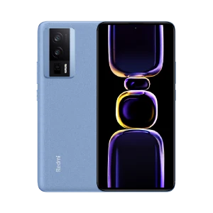

HTML 系列教程 浏览器脚本 服务器脚本 编程教程 XML 系列教程 建站手册 参考手册 CSS 基础教程 CSS 教程 CSS 简介 CSS 语法 CSS 选择器 CSS 使用 CSS 注释 CSS 颜色 CSS RGB 颜色 CSS HEX 颜色 CSS HSL 颜色 CSS 背景 CSS 背景图像 CSS 背景重复 CSS 背景附着 CSS 简写背景属性 CSS 边框 CSS 边框宽度 CSS 边框颜色 CSS 边框各边 CSS 简写边框属性 CSS 圆角边框 CSS 外边距 CSS 外边距合并 CSS 内边距 CSS 高度/宽度 CSS 框模型 CSS 轮廓 CSS 轮廓宽度 CSS 轮廓颜色 CSS 简写轮廓属性 CSS 轮廓偏移 CSS 文本 CSS 文本对齐 CSS 文本装饰 CSS 文本转换 CSS 文字间距 CSS 文本阴影 CSS 字体 CSS 字体样式 CSS 字体大小 CSS 谷歌字体 CSS 简写字体属性 CSS 图标 CSS 链接 CSS 列表 CSS 表格 CSS 中级教程 CSS Display CSS max-width CSS 定位 CSS 溢出 CSS 浮动 CSS 清除浮动 CSS 布局 - 浮动实例 CSS inline-block CSS 对齐 CSS 组合器 CSS 伪类 CSS 伪元素 CSS 不透明度 CSS 导航栏 CSS 垂直导航栏 CSS 水平导航栏 CSS 下拉菜单 CSS 图片库 CSS 图像精灵 CSS 属性选择器 CSS 表单 CSS 计数器 CSS 网站布局 CSS 单位 CSS 特异性 CSS3 高级教程 CSS 圆角 CSS 边框图像 CSS 背景 CSS 颜色 CSS 渐变 CSS 径向渐变 CSS 阴影 CSS box-shadow CSS 文本效果 CSS 网络字体 CSS 2D 转换 CSS 3D 转换 CSS 过渡 CSS 动画 CSS 工具提示 CSS 图像样式 CSS object-fit CSS 按钮 CSS 分页 CSS 多列 CSS 用户界面 CSS 变量 CSS 覆盖变量 CSS 变量 - JavaScript CSS 变量 - 媒体查询 CSS Box Sizing CSS Flexbox CSS 媒体查询 CSS 媒体查询实例 CSS 响应式设计 RWD 简介 RWD 视口 RWD 网格视图 RWD 媒体查询 RWD 图像 RWD 视频 CSS 网格教程 CSS 网格布局模块 CSS 网格容器 CSS 网格项目 CSS 实例 CSS 实例 CSS 测验 CSS 测验 CSS 参考手册 CSS 参考手册 CSS 浏览器支持 CSS 选择器 CSS 函数 CSS 单位 CSS 听觉 CSS 网络安全字体 CSS 可动画制作 CSS 单位 CSS 颜色 CSS 颜色值 CSS 默认值 CSS 实体 建站手册 网站构建 万维网联盟 (W3C) 浏览器信息 网站品质 语义网 职业规划 网站主机 关于 W3School 帮助 W3School CSS 轮廓 CSS 框模型 CSS 轮廓宽度 此元素拥有黑色边框和蓝色轮廓，宽度为 10px。 CSS 轮廓 轮廓是在元素周围绘制的一条线，在边框之外，以凸显元素。 CSS 拥有如下轮廓属性： outline-style outline-color outline-width outline-offset outline 注意：轮廓与边框不同！不同之处在于：轮廓是在元素边框之外绘制的，并且可能与其他内容重叠。同样，轮廓也不是元素尺寸的一部分；元素的总宽度和高度不受轮廓线宽度的影响。 HTML 系列教程 浏览器脚本 服务器脚本 编程教程 XML 系列教程 建站手册 参考手册 CSS 基础教程 CSS 教程 CSS 简介 CSS 语法 CSS 选择器 CSS 使用 CSS 注释 CSS 颜色 CSS RGB 颜色 CSS HEX 颜色 CSS HSL 颜色 CSS 背景 CSS 背景图像 CSS 背景重复 CSS 背景附着 CSS 简写背景属性 CSS 边框 CSS 边框宽度 CSS 边框颜色 CSS 边框各边 CSS 简写边框属性 CSS 圆角边框 CSS 外边距 CSS 外边距合并 CSS 内边距 CSS 高度/宽度 CSS 框模型 CSS 轮廓 CSS 轮廓宽度 CSS 轮廓颜色 CSS 简写轮廓属性 CSS 轮廓偏移 CSS 文本 CSS 文本对齐 CSS 文本装饰 CSS 文本转换 CSS 文字间距 CSS 文本阴影 CSS 字体 CSS 字体样式 CSS 字体大小 CSS 谷歌字体 CSS 简写字体属性 CSS 图标 CSS 链接 CSS 列表 CSS 表格 CSS 中级教程 CSS Display CSS max-width CSS 定位 CSS 溢出 CSS 浮动 CSS 清除浮动 CSS 布局 - 浮动实例 CSS inline-block CSS 对齐 CSS 组合器 CSS 伪类 CSS 伪元素 CSS 不透明度 CSS 导航栏 CSS 垂直导航栏 CSS 水平导航栏 CSS 下拉菜单 CSS 图片库 CSS 图像精灵 CSS 属性选择器 CSS 表单 CSS 计数器 CSS 网站布局 CSS 单位 CSS 特异性 CSS3 高级教程 CSS 圆角 CSS 边框图像 CSS 背景 CSS 颜色 CSS 渐变 CSS 径向渐变 CSS 阴影 CSS box-shadow CSS 文本效果 CSS 网络字体 CSS 2D 转换 CSS 3D 转换 CSS 过渡 CSS 动画 CSS 工具提示 CSS 图像样式 CSS object-fit CSS 按钮 CSS 分页 CSS 多列 CSS 用户界面 CSS 变量 CSS 覆盖变量 CSS 变量 - JavaScript CSS 变量 - 媒体查询 CSS Box Sizing CSS Flexbox CSS 媒体查询 CSS 媒体查询实例 CSS 响应式设计 RWD 简介 RWD 视口 RWD 网格视图 RWD 媒体查询 RWD 图像 RWD 视频 CSS 网格教程 CSS 网格布局模块 CSS 网格容器 CSS 网格项目 CSS 实例 CSS 实例 CSS 测验 CSS 测验 CSS 参考手册 CSS 参考手册 CSS 浏览器支持 CSS 选择器 CSS 函数 CSS 单位 CSS 听觉 CSS 网络安全字体 CSS 可动画制作 CSS 单位 CSS 颜色 CSS 颜色值 CSS 默认值 CSS 实体 建站手册 网站构建 万维网联盟 (W3C) 浏览器信息 网站品质 语义网 职业规划 网站主机 关于 W3School 帮助 W3School CSS 轮廓 CSS 框模型 CSS 轮廓宽度 此元素拥有黑色边框和蓝色轮廓，宽度为 10px。 CSS 轮廓 轮廓是在元素周围绘制的一条线，在边框之外，以凸显元素。 CSS 拥有如下轮廓属性： outline-style outline-color outline-width outline-offset outline 注意：轮廓与边框不同！不同之处在于：轮廓是在元素边框之外绘制的，并且可能与其他内容重叠。同样，轮廓也不是元素尺寸的一部分；元素的总宽度和高度不受轮廓线宽度的影响。 HTML 系列教程 浏览器脚本 服务器脚本 编程教程 XML 系列教程 建站手册 参考手册 CSS 基础教程 CSS 教程 CSS 简介 CSS 语法 CSS 选择器 CSS 使用 CSS 注释 CSS 颜色 CSS RGB 颜色 CSS HEX 颜色 CSS HSL 颜色 CSS 背景 CSS 背景图像 CSS 背景重复 CSS 背景附着 CSS 简写背景属性 CSS 边框 CSS 边框宽度 CSS 边框颜色 CSS 边框各边 CSS 简写边框属性 CSS 圆角边框 CSS 外边距 CSS 外边距合并 CSS 内边距 CSS 高度/宽度 CSS 框模型 CSS 轮廓 CSS 轮廓宽度 CSS 轮廓颜色 CSS 简写轮廓属性 CSS 轮廓偏移 CSS 文本 CSS 文本对齐 CSS 文本装饰 CSS 文本转换 CSS 文字间距 CSS 文本阴影 CSS 字体 CSS 字体样式 CSS 字体大小 CSS 谷歌字体 CSS 简写字体属性 CSS 图标 CSS 链接 CSS 列表 CSS 表格 CSS 中级教程 CSS Display CSS max-width CSS 定位 CSS 溢出 CSS 浮动 CSS 清除浮动 CSS 布局 - 浮动实例 CSS inline-block CSS 对齐 CSS 组合器 CSS 伪类 CSS 伪元素 CSS 不透明度 CSS 导航栏 CSS 垂直导航栏 CSS 水平导航栏 CSS 下拉菜单 CSS 图片库 CSS 图像精灵 CSS 属性选择器 CSS 表单 CSS 计数器 CSS 网站布局 CSS 单位 CSS 特异性 CSS3 高级教程 CSS 圆角 CSS 边框图像 CSS 背景 CSS 颜色 CSS 渐变 CSS 径向渐变 CSS 阴影 CSS box-shadow CSS 文本效果 CSS 网络字体 CSS 2D 转换 CSS 3D 转换 CSS 过渡 CSS 动画 CSS 工具提示 CSS 图像样式 CSS object-fit CSS 按钮 CSS 分页 CSS 多列 CSS 用户界面 CSS 变量 CSS 覆盖变量 CSS 变量 - JavaScript CSS 变量 - 媒体查询 CSS Box Sizing CSS Flexbox CSS 媒体查询 CSS 媒体查询实例 CSS 响应式设计 RWD 简介 RWD 视口 RWD 网格视图 RWD 媒体查询 RWD 图像 RWD 视频 CSS 网格教程 CSS 网格布局模块 CSS 网格容器 CSS 网格项目 CSS 实例 CSS 实例 CSS 测验 CSS 测验 CSS 参考手册 CSS 参考手册 CSS 浏览器支持 CSS 选择器 CSS 函数 CSS 单位 CSS 听觉 CSS 网络安全字体 CSS 可动画制作 CSS 单位 CSS 颜色 CSS 颜色值 CSS 默认值 CSS 实体 建站手册 网站构建 万维网联盟 (W3C) 浏览器信息 网站品质 语义网 职业规划 网站主机 关于 W3School 帮助 W3School CSS 轮廓 CSS 框模型 CSS 轮廓宽度 此元素拥有黑色边框和蓝色轮廓，宽度为 10px。 CSS 轮廓 轮廓是在元素周围绘制的一条线，在边框之外，以凸显元素。 CSS 拥有如下轮廓属性： outline-style outline-color outline-width outline-offset outline 注意：轮廓与边框不同！不同之处在于：轮廓是在元素边框之外绘制的，并且可能与其他内容重叠。同样，轮廓也不是元素尺寸的一部分；元素的总宽度和高度不受轮廓线宽度的影响。 HTML 系列教程 浏览器脚本 服务器脚本 编程教程 XML 系列教程 建站手册 参考手册 CSS 基础教程 CSS 教程 CSS 简介 CSS 语法 CSS 选择器 CSS 使用 CSS 注释 CSS 颜色 CSS RGB 颜色 CSS HEX 颜色 CSS HSL 颜色 CSS 背景 CSS 背景图像 CSS 背景重复 CSS 背景附着 CSS 简写背景属性 CSS 边框 CSS 边框宽度 CSS 边框颜色 CSS 边框各边 CSS 简写边框属性 CSS 圆角边框 CSS 外边距 CSS 外边距合并 CSS 内边距 CSS 高度/宽度 CSS 框模型 CSS 轮廓 CSS 轮廓宽度 CSS 轮廓颜色 CSS 简写轮廓属性 CSS 轮廓偏移 CSS 文本 CSS 文本对齐 CSS 文本装饰 CSS 文本转换 CSS 文字间距 CSS 文本阴影 CSS 字体 CSS 字体样式 CSS 字体大小 CSS 谷歌字体 CSS 简写字体属性 CSS 图标 CSS 链接 CSS 列表 CSS 表格 CSS 中级教程 CSS Display CSS max-width CSS 定位 CSS 溢出 CSS 浮动 CSS 清除浮动 CSS 布局 - 浮动实例 CSS inline-block CSS 对齐 CSS 组合器 CSS 伪类 CSS 伪元素 CSS 不透明度 CSS 导航栏 CSS 垂直导航栏 CSS 水平导航栏 CSS 下拉菜单 CSS 图片库 CSS 图像精灵 CSS 属性选择器 CSS 表单 CSS 计数器 CSS 网站布局 CSS 单位 CSS 特异性 CSS3 高级教程 CSS 圆角 CSS 边框图像 CSS 背景 CSS 颜色 CSS 渐变 CSS 径向渐变 CSS 阴影 CSS box-shadow CSS 文本效果 CSS 网络字体 CSS 2D 转换 CSS 3D 转换 CSS 过渡 CSS 动画 CSS 工具提示 CSS 图像样式 CSS object-fit CSS 按钮 CSS 分页 CSS 多列 CSS 用户界面 CSS 变量 CSS 覆盖变量 CSS 变量 - JavaScript CSS 变量 - 媒体查询 CSS Box Sizing CSS Flexbox CSS 媒体查询 CSS 媒体查询实例 CSS 响应式设计 RWD 简介 RWD 视口 RWD 网格视图 RWD 媒体查询 RWD 图像 RWD 视频 CSS 网格教程 CSS 网格布局模块 CSS 网格容器 CSS 网格项目 CSS 实例 CSS 实例 CSS 测验 CSS 测验 CSS 参考手册 CSS 参考手册 CSS 浏览器支持 CSS 选择器 CSS 函数 CSS 单位 CSS 听觉 CSS 网络安全字体 CSS 可动画制作 CSS 单位 CSS 颜色 CSS 颜色值 CSS 默认值 CSS 实体 建站手册 网站构建 万维网联盟 (W3C) 浏览器信息 网站品质 语义网 职业规划 网站主机 关于 W3School 帮助 W3School CSS 轮廓 CSS 框模型 CSS 轮廓宽度 此元素拥有黑色边框和蓝色轮廓，宽度为 10px。 CSS 轮廓 轮廓是在元素周围绘制的一条线，在边框之外，以凸显元素。 CSS 拥有如下轮廓属性： outline-style outline-color outline-width outline-offset outline 注意：轮廓与边框不同！不同之处在于：轮廓是在元素边框之外绘制的，并且可能与其他内容重叠。同样，轮廓也不是元素尺寸的一部分；元素的总宽度和高度不受轮廓线宽度的影响。 HTML 系列教程 浏览器脚本 服务器脚本 编程教程 XML 系列教程 建站手册 参考手册 CSS 基础教程 CSS 教程 CSS 简介 CSS 语法 CSS 选择器 CSS 使用 CSS 注释 CSS 颜色 CSS RGB 颜色 CSS HEX 颜色 CSS HSL 颜色 CSS 背景 CSS 背景图像 CSS 背景重复 CSS 背景附着 CSS 简写背景属性 CSS 边框 CSS 边框宽度 CSS 边框颜色 CSS 边框各边 CSS 简写边框属性 CSS 圆角边框 CSS 外边距 CSS 外边距合并 CSS 内边距 CSS 高度/宽度 CSS 框模型 CSS 轮廓 CSS 轮廓宽度 CSS 轮廓颜色 CSS 简写轮廓属性 CSS 轮廓偏移 CSS 文本 CSS 文本对齐 CSS 文本装饰 CSS 文本转换 CSS 文字间距 CSS 文本阴影 CSS 字体 CSS 字体样式 CSS 字体大小 CSS 谷歌字体 CSS 简写字体属性 CSS 图标 CSS 链接 CSS 列表 CSS 表格 CSS 中级教程 CSS Display CSS max-width CSS 定位 CSS 溢出 CSS 浮动 CSS 清除浮动 CSS 布局 - 浮动实例 CSS inline-block CSS 对齐 CSS 组合器 CSS 伪类 CSS 伪元素 CSS 不透明度 CSS 导航栏 CSS 垂直导航栏 CSS 水平导航栏 CSS 下拉菜单 CSS 图片库 CSS 图像精灵 CSS 属性选择器 CSS 表单 CSS 计数器 CSS 网站布局 CSS 单位 CSS 特异性 CSS3 高级教程 CSS 圆角 CSS 边框图像 CSS 背景 CSS 颜色 CSS 渐变 CSS 径向渐变 CSS 阴影 CSS box-shadow CSS 文本效果 CSS 网络字体 CSS 2D 转换 CSS 3D 转换 CSS 过渡 CSS 动画 CSS 工具提示 CSS 图像样式 CSS object-fit CSS 按钮 CSS 分页 CSS 多列 CSS 用户界面 CSS 变量 CSS 覆盖变量 CSS 变量 - JavaScript CSS 变量 - 媒体查询 CSS Box Sizing CSS Flexbox CSS 媒体查询 CSS 媒体查询实例 CSS 响应式设计 RWD 简介 RWD 视口 RWD 网格视图 RWD 媒体查询 RWD 图像 RWD 视频 CSS 网格教程 CSS 网格布局模块 CSS 网格容器 CSS 网格项目 CSS 实例 CSS 实例 CSS 测验 CSS 测验 CSS 参考手册 CSS 参考手册 CSS 浏览器支持 CSS 选择器 CSS 函数 CSS 单位 CSS 听觉 CSS 网络安全字体 CSS 可动画制作 CSS 单位 CSS 颜色 CSS 颜色值 CSS 默认值 CSS 实体 建站手册 网站构建 万维网联盟 (W3C) 浏览器信息 网站品质 语义网 职业规划 网站主机 关于 W3School 帮助 W3School CSS 轮廓 CSS 框模型 CSS 轮廓宽度 此元素拥有黑色边框和蓝色轮廓，宽度为 10px。 CSS 轮廓 轮廓是在元素周围绘制的一条线，在边框之外，以凸显元素。 CSS 拥有如下轮廓属性： outline-style outline-color outline-width outline-offset outline 注意：轮廓与边框不同！不同之处在于：轮廓是在元素边框之外绘制的，并且可能与其他内容重叠。同样，轮廓也不是元素尺寸的一部分；元素的总宽度和高度不受轮廓线宽度的影响。 HTML 系列教程 浏览器脚本 服务器脚本 编程教程 XML 系列教程 建站手册 参考手册 CSS 基础教程 CSS 教程 CSS 简介 CSS 语法 CSS 选择器 CSS 使用 CSS 注释 CSS 颜色 CSS RGB 颜色 CSS HEX 颜色 CSS HSL 颜色 CSS 背景 CSS 背景图像 CSS 背景重复 CSS 背景附着 CSS 简写背景属性 CSS 边框 CSS 边框宽度 CSS 边框颜色 CSS 边框各边 CSS 简写边框属性 CSS 圆角边框 CSS 外边距 CSS 外边距合并 CSS 内边距 CSS 高度/宽度 CSS 框模型 CSS 轮廓 CSS 轮廓宽度 CSS 轮廓颜色 CSS 简写轮廓属性 CSS 轮廓偏移 CSS 文本 CSS 文本对齐 CSS 文本装饰 CSS 文本转换 CSS 文字间距 CSS 文本阴影 CSS 字体 CSS 字体样式 CSS 字体大小 CSS 谷歌字体 CSS 简写字体属性 CSS 图标 CSS 链接 CSS 列表 CSS 表格 CSS 中级教程 CSS Display CSS max-width CSS 定位 CSS 溢出 CSS 浮动 CSS 清除浮动 CSS 布局 - 浮动实例 CSS inline-block CSS 对齐 CSS 组合器 CSS 伪类 CSS 伪元素 CSS 不透明度 CSS 导航栏 CSS 垂直导航栏 CSS 水平导航栏 CSS 下拉菜单 CSS 图片库 CSS 图像精灵 CSS 属性选择器 CSS 表单 CSS 计数器 CSS 网站布局 CSS 单位 CSS 特异性 CSS3 高级教程 CSS 圆角 CSS 边框图像 CSS 背景 CSS 颜色 CSS 渐变 CSS 径向渐变 CSS 阴影 CSS box-shadow CSS 文本效果 CSS 网络字体 CSS 2D 转换 CSS 3D 转换 CSS 过渡 CSS 动画 CSS 工具提示 CSS 图像样式 CSS object-fit CSS 按钮 CSS 分页 CSS 多列 CSS 用户界面 CSS 变量 CSS 覆盖变量 CSS 变量 - JavaScript CSS 变量 - 媒体查询 CSS Box Sizing CSS Flexbox CSS 媒体查询 CSS 媒体查询实例 CSS 响应式设计 RWD 简介 RWD 视口 RWD 网格视图 RWD 媒体查询 RWD 图像 RWD 视频 CSS 网格教程 CSS 网格布局模块 CSS 网格容器 CSS 网格项目 CSS 实例 CSS 实例 CSS 测验 CSS 测验 CSS 参考手册 CSS 参考手册 CSS 浏览器支持 CSS 选择器 CSS 函数 CSS 单位 CSS 听觉 CSS 网络安全字体 CSS 可动画制作 CSS 单位 CSS 颜色 CSS 颜色值 CSS 默认值 CSS 实体 建站手册 网站构建 万维网联盟 (W3C) 浏览器信息 网站品质 语义网 职业规划 网站主机 关于 W3School 帮助 W3School CSS 轮廓 CSS 框模型 CSS 轮廓宽度 此元素拥有黑色边框和蓝色轮廓，宽度为 10px。 CSS 轮廓 轮廓是在元素周围绘制的一条线，在边框之外，以凸显元素。 CSS 拥有如下轮廓属性： outline-style outline-color outline-width outline-offset outline 注意：轮廓与边框不同！不同之处在于：轮廓是在元素边框之外绘制的，并且可能与其他内容重叠。同样，轮廓也不是元素尺寸的一部分；元素的总宽度和高度不受轮廓线宽度的影响。 HTML 系列教程 浏览器脚本 服务器脚本 编程教程 XML 系列教程 建站手册 参考手册 CSS 基础教程 CSS 教程 CSS 简介 CSS 语法 CSS 选择器 CSS 使用 CSS 注释 CSS 颜色 CSS RGB 颜色 CSS HEX 颜色 CSS HSL 颜色 CSS 背景 CSS 背景图像 CSS 背景重复 CSS 背景附着 CSS 简写背景属性 CSS 边框 CSS 边框宽度 CSS 边框颜色 CSS 边框各边 CSS 简写边框属性 CSS 圆角边框 CSS 外边距 CSS 外边距合并 CSS 内边距 CSS 高度/宽度 CSS 框模型 CSS 轮廓 CSS 轮廓宽度 CSS 轮廓颜色 CSS 简写轮廓属性 CSS 轮廓偏移 CSS 文本 CSS 文本对齐 CSS 文本装饰 CSS 文本转换 CSS 文字间距 CSS 文本阴影 CSS 字体 CSS 字体样式 CSS 字体大小 CSS 谷歌字体 CSS 简写字体属性 CSS 图标 CSS 链接 CSS 列表 CSS 表格 CSS 中级教程 CSS Display CSS max-width CSS 定位 CSS 溢出 CSS 浮动 CSS 清除浮动 CSS 布局 - 浮动实例 CSS inline-block CSS 对齐 CSS 组合器 CSS 伪类 CSS 伪元素 CSS 不透明度 CSS 导航栏 CSS 垂直导航栏 CSS 水平导航栏 CSS 下拉菜单 CSS 图片库 CSS 图像精灵 CSS 属性选择器 CSS 表单 CSS 计数器 CSS 网站布局 CSS 单位 CSS 特异性 CSS3 高级教程 CSS 圆角 CSS 边框图像 CSS 背景 CSS 颜色 CSS 渐变 CSS 径向渐变 CSS 阴影 CSS box-shadow CSS 文本效果 CSS 网络字体 CSS 2D 转换 CSS 3D 转换 CSS 过渡 CSS 动画 CSS 工具提示 CSS 图像样式 CSS object-fit CSS 按钮 CSS 分页 CSS 多列 CSS 用户界面 CSS 变量 CSS 覆盖变量 CSS 变量 - JavaScript CSS 变量 - 媒体查询 CSS Box Sizing CSS Flexbox CSS 媒体查询 CSS 媒体查询实例 CSS 响应式设计 RWD 简介 RWD 视口 RWD 网格视图 RWD 媒体查询 RWD 图像 RWD 视频 CSS 网格教程 CSS 网格布局模块 CSS 网格容器 CSS 网格项目 CSS 实例 CSS 实例 CSS 测验 CSS 测验 CSS 参考手册 CSS 参考手册 CSS 浏览器支持 CSS 选择器 CSS 函数 CSS 单位 CSS 听觉 CSS 网络安全字体 CSS 可动画制作 CSS 单位 CSS 颜色 CSS 颜色值 CSS 默认值 CSS 实体 建站手册 网站构建 万维网联盟 (W3C) 浏览器信息 网站品质 语义网 职业规划 网站主机 关于 W3School 帮助 W3School CSS 轮廓 CSS 框模型 CSS 轮廓宽度 此元素拥有黑色边框和蓝色轮廓，宽度为 10px。 CSS 轮廓 轮廓是在元素周围绘制的一条线，在边框之外，以凸显元素。 CSS 拥有如下轮廓属性： outline-style outline-color outline-width outline-offset outline 注意：轮廓与边框不同！不同之处在于：轮廓是在元素边框之外绘制的，并且可能与其他内容重叠。同样，轮廓也不是元素尺寸的一部分；元素的总宽度和高度不受轮廓线宽度的影响。